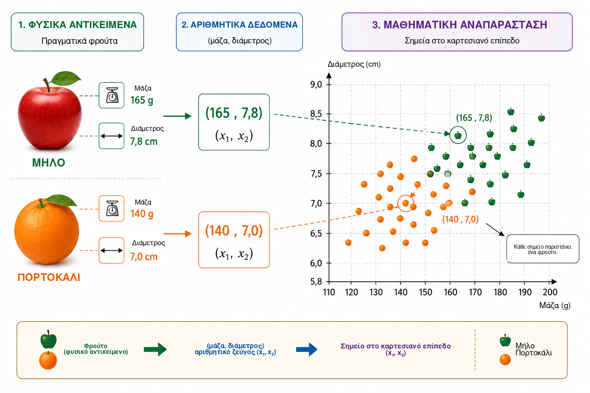
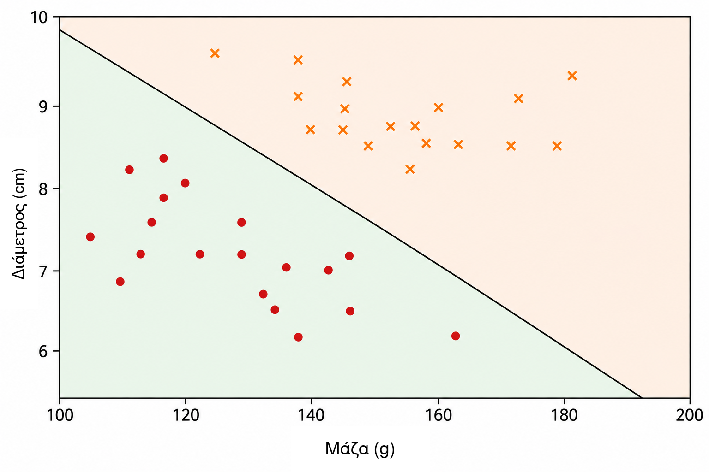
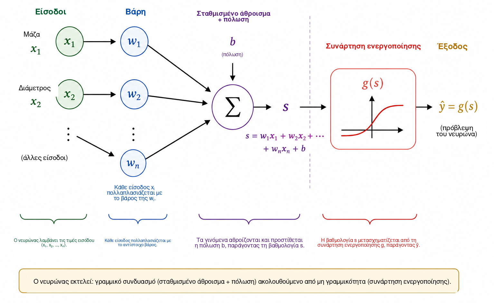
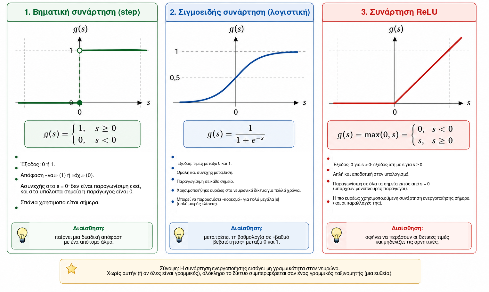
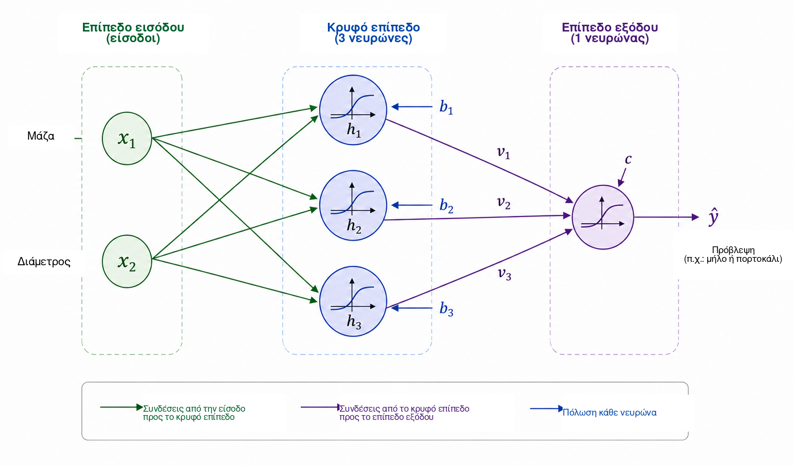
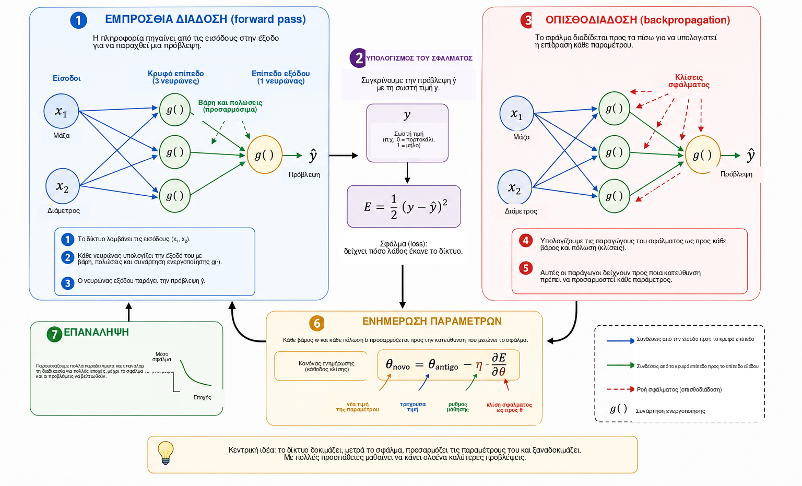
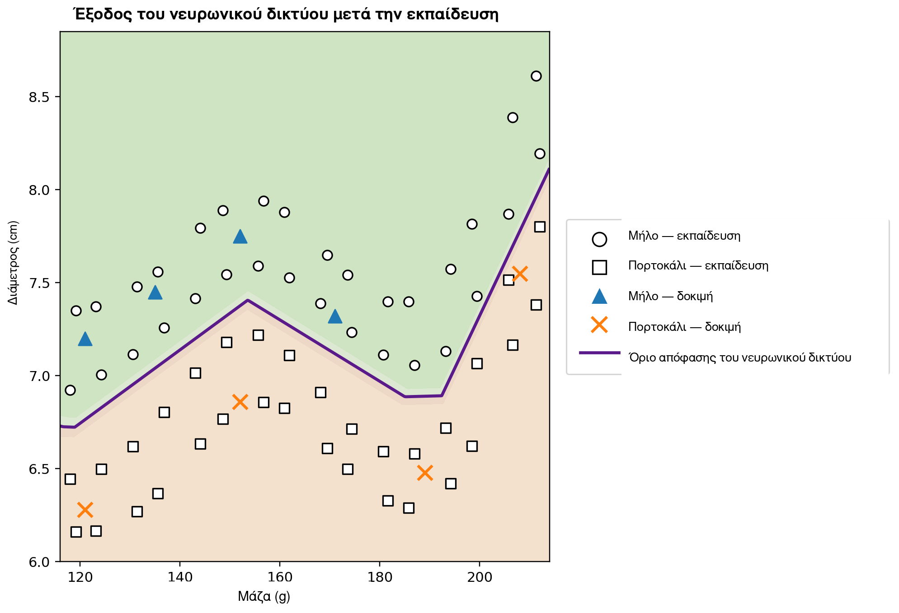

Πότε μπορεί να μάθει ένας υπολογιστής;
Στην καθημερινή ζωή παίρνουμε αποφάσεις ταξινόμησης σχεδόν χωρίς να το αντιλαμβανόμαστε. Κοιτάζοντας ένα φρούτο, αναγνωρίζουμε γρήγορα αν είναι μήλο ή πορτοκάλι· όταν φτάνει ένα μήνυμα στο τηλέφωνο, διακρίνουμε μια κανονική συνομιλία από ανεπιθύμητη διαφήμιση· στις ιατρικές αναλύσεις, διαφορετικές μετρήσεις μπορούν να συνδυαστούν για να υποστηρίξουν μια απόφαση· και στα χρηματοπιστωτικά ιδρύματα αξιολογούνται πολλά δεδομένα πριν από τη χορήγηση πίστωσης. Σε όλα αυτά τα παραδείγματα, πολλά χαρακτηριστικά εξετάζονται από κοινού ώστε να παραχθεί μια απάντηση.
Σε πολλά παραδοσιακά προγράμματα υπολογιστών, οι κανόνες που παράγουν αυτή την απάντηση γράφονται ρητά από τον προγραμματιστή. Η προσέγγιση αυτή λειτουργεί καλά όταν οι κανόνες είναι γνωστοί και μπορούν να διατυπωθούν καθαρά. Γίνεται λιγότερο αποτελεσματική όταν τα δεδομένα παρουσιάζουν μεγάλη μεταβλητότητα ή όταν είναι δύσκολο να διατυπωθούν εκ των προτέρων όλες οι συνθήκες που απαιτούνται για μια καλή απόφαση. Αυτό οδηγεί σε ένα φυσικό ερώτημα:
Μπορούμε να κατασκευάσουμε ένα πρόγραμμα που να μαθαίνει έναν κανόνα απόφασης από παραδείγματα, αντί να λαμβάνει τον κανόνα εκ των προτέρων;
Αυτή είναι μία από τις κεντρικές ιδέες της μηχανικής μάθησης, ενός πεδίου της τεχνητής νοημοσύνης που μελετά μεθόδους με τις οποίες τα μοντέλα προσαρμόζονται από δεδομένα . Στην επιβλεπόμενη μάθηση, ο αλγόριθμος λαμβάνει παραδείγματα μαζί με τις σωστές απαντήσεις και αναζητούμε ένα μοντέλο που να μπορεί να κάνει χρήσιμες προβλέψεις και για περιπτώσεις που δεν χρησιμοποιήθηκαν κατά την εκπαίδευση. Ανάμεσα στα πολλά μοντέλα που αναπτύχθηκαν για αυτόν τον σκοπό, τα τεχνητά νευρωνικά δίκτυα έχουν αποκτήσει ιδιαίτερη σημασία σε εφαρμογές όπως η αναγνώριση εικόνων, η επεξεργασία γλώσσας, η ανάλυση σημάτων και η πρόβλεψη χρονοσειρών .
Η χρήση των νευρωνικών δικτύων ως γέφυρας ανάμεσα στα μαθηματικά, τις υπολογιστικές μεθόδους και την εκπαίδευση έχει ήδη συζητηθεί στο Professor de Matemática Online από τους Batista και Martins , οι οποίοι παρουσιάζουν μια δραστηριότητα που συνδυάζει επιμόρφωση εκπαιδευτικών, Python και αναγνώριση ψηφίων. Το παρόν άρθρο ακολουθεί μια συμπληρωματική διαδρομή. Κύριος στόχος μας είναι να καταστήσουμε ορατή την εσωτερική μαθηματική δομή ενός μικρού νευρωνικού δικτύου, ξεκινώντας από την αναλυτική γεωμετρία και προχωρώντας βήμα προς βήμα στον υπολογισμό κλίσεων και σε μια χειροποίητη υλοποίηση της οπισθοδιάδοσης.
Παρά την πολυπλοκότητα των σύγχρονων εφαρμογών, ο μαθηματικός πυρήνας ενός νευρωνικού δικτύου μπορεί να εισαχθεί με σχετικά οικείες ιδέες. Σε βασικό επίπεδο, ένα νευρωνικό δίκτυο είναι μια σύνθεση συναρτήσεων των οποίων οι παράμετροι προσαρμόζονται από δεδομένα. Ξεκινάμε με ένα απλό γεωμετρικό πρόβλημα, επανερμηνεύουμε μια διαχωριστική ευθεία ως τεχνητό νευρώνα, συνδέουμε πολλούς νευρώνες, μελετούμε τον ρόλο των συναρτήσεων ενεργοποίησης και δείχνουμε πώς οι παράγωγοι μπορούν να χρησιμοποιηθούν για την αυτόματη προσαρμογή των παραμέτρων του δικτύου. Στη συνέχεια υλοποιούμε ένα πλήρες μικρό παράδειγμα σε Python, με άμεση αντιστοιχία ανάμεσα στις εξισώσεις και τον κώδικα.
Μαθηματική αναπαράσταση του προβλήματος
Για να κατανοήσουμε πώς λειτουργεί ένα νευρωνικό δίκτυο, ξεκινάμε με ένα σκόπιμα απλό πρόβλημα: να διακρίνουμε μήλα από πορτοκάλια. Ένα φρούτο διαθέτει πολλά χαρακτηριστικά που θα μπορούσαν να είναι χρήσιμα για αυτόν τον σκοπό, όπως χρώμα, μάζα, διάμετρος, υφή και άρωμα. Ωστόσο, ένα πρώτο μαθηματικό μοντέλο δεν χρειάζεται να περιλαμβάνει όλη αυτή την πολυπλοκότητα. Θα χρησιμοποιήσουμε μόνο δύο εύκολα μετρήσιμες ποσότητες: τη μάζα, σε γραμμάρια, και τη διάμετρο, σε εκατοστά.
Κάθε φρούτο παριστάνεται επομένως από ένα διατεταγμένο ζεύγος \[(x_1,x_2),\] όπου \[x_1=\text{μάζα} \qquad\text{και}\qquad x_2=\text{διάμετρος}.\]
Το ζεύγος \((155,\;7.2)\) παριστάνει λοιπόν ένα φρούτο με μάζα \(155\) g και διάμετρο \(7.2\) cm. Αντικαθιστώντας το φυσικό αντικείμενο με δύο αριθμητικές μετρήσεις, αντιστοιχίζουμε κάθε φρούτο σε ένα σημείο του καρτεσιανού επιπέδου: η πρώτη συντεταγμένη δίνει τη μάζα και η δεύτερη τη διάμετρο. Το Σχήμα 1 απεικονίζει αυτή την αναπαράσταση για ένα υποθετικό σύνολο μήλων και πορτοκαλιών.

Αυτός ο μετασχηματισμός αλλάζει τη φαινομενική φύση του προβλήματος. Αντί να ρωτάμε άμεσα πώς μπορούμε να αναγνωρίσουμε ένα μήλο ή ένα πορτοκάλι, μπορούμε να θέσουμε ένα γεωμετρικό ερώτημα: πώς μπορούν να διαχωριστούν στο επίπεδο τα σημεία που ανήκουν στις δύο κλάσεις; Αυτή η αλλαγή οπτικής είναι θεμελιώδης στη μηχανική μάθηση. Εικόνες, κείμενα, ήχοι και πειραματικά σήματα πρέπει όλα να μετατρέπονται σε αριθμητικές αναπαραστάσεις πριν μπορέσει ένας αλγόριθμος να τα επεξεργαστεί. Στο παράδειγμά μας κάθε αντικείμενο έχει μόνο δύο συντεταγμένες· σε πραγματικές εφαρμογές μια αναπαράσταση μπορεί να περιλαμβάνει εκατοντάδες, χιλιάδες ή ακόμη και εκατομμύρια συνιστώσες. Η αρχή παραμένει η ίδια: κάθε παράδειγμα αντιστοιχίζεται σε ένα σύνολο αριθμών και το μοντέλο αναζητά έναν κανόνα που απεικονίζει αυτή την αναπαράσταση στην επιθυμητή απάντηση.
Ξεκινάμε με τον απλούστερο διαθέσιμο γεωμετρικό κανόνα και ρωτάμε αν μία μόνο ευθεία μπορεί να διαχωρίσει ικανοποιητικά τα σημεία των μήλων από τα σημεία των πορτοκαλιών.
Μια ευθεία ως ταξινομητής
Από τη στιγμή που κάθε φρούτο παριστάνεται ως σημείο στο καρτεσιανό επίπεδο, η ταξινόμηση γίνεται γεωμετρικό πρόβλημα: μπορεί μια ευθεία να διαχωρίσει τα μήλα από τα πορτοκάλια; Το ερώτημα αυτό συνοψίζει τη βασική ιδέα μιας σημαντικής οικογένειας μεθόδων μηχανικής μάθησης, γνωστών ως γραμμικοί ταξινομητές.
Θεωρήστε μια ευθεία που διέρχεται από το νέφος των δεδομένων, όπως φαίνεται στο Σχήμα 2. Η ευθεία χωρίζει το επίπεδο σε δύο ημιεπίπεδα. Αν τα περισσότερα σημεία που αντιστοιχούν σε μήλα βρίσκονται στη μία πλευρά και τα περισσότερα σημεία που αντιστοιχούν σε πορτοκάλια στην άλλη, η θέση ενός νέου φρούτου ως προς την ευθεία μπορεί να χρησιμοποιηθεί ως κανόνας ταξινόμησης. Αφού μετρήσουμε τη μάζα και τη διάμετρο, παριστάνουμε το φρούτο με ένα σημείο και προσδιορίζουμε σε ποια πλευρά της ευθείας βρίσκεται.

Στο καρτεσιανό επίπεδο \((x_1,x_2)\), μια ευθεία μπορεί να περιγραφεί από \[w_1x_1+w_2x_2+b=0, \qquad (w_1,w_2)\neq(0,0).\]
Το διάνυσμα \((w_1,w_2)\) είναι κάθετο στην ευθεία και επομένως καθορίζει τον προσανατολισμό της, ενώ η παράμετρος \(b\) συμβάλλει στη θέση της. Η αναπαράσταση αυτή περιέχει μια μικρή πλεονάζουσα πληροφορία: ο πολλαπλασιασμός των \(w_1\), \(w_2\) και \(b\) με την ίδια μη μηδενική σταθερά παράγει ακριβώς την ίδια ευθεία. Επομένως, οι παράμετροι που περιγράφουν το όριο δεν είναι μοναδικές. Επιπλέον, η αριθμητική ερμηνεία τους εξαρτάται από την κλίμακα των μεταβλητών. Επειδή η μάζα μετριέται σε γραμμάρια και η διάμετρος σε εκατοστά, τα αριθμητικά μεγέθη των \(w_1\) και \(w_2\) δεν πρέπει να συγκρίνονται χωρίς να λαμβάνονται υπόψη οι διαφορετικές μονάδες.
Η ίδια η εξίσωση της ευθείας παρέχει έναν απλό τρόπο για να προσδιορίσουμε σε ποια πλευρά του ορίου βρίσκεται ένα σημείο. Ορίζουμε τη βαθμολογία \[s(x_1,x_2)=w_1x_1+w_2x_2+b.\]
Αν \(s(x_1,x_2)=0\), το σημείο βρίσκεται πάνω στην ευθεία. Αν \(s(x_1,x_2)>0\), βρίσκεται στο ένα ημιεπίπεδο· αν \(s(x_1,x_2)<0\), βρίσκεται στο άλλο. Αν συμφωνήσουμε ότι οι θετικές βαθμολογίες αντιστοιχούν σε μήλα και οι αρνητικές σε πορτοκάλια, ο κανόνας γίνεται \[\begin{cases} s(x_1,x_2)\geq 0 & \Longrightarrow \text{μήλο},\\ s(x_1,x_2)<0 & \Longrightarrow \text{πορτοκάλι}. \end{cases}\]
Για παράδειγμα, θεωρήστε το όριο που ορίζεται από \[w_1=\frac{1}{10}, \qquad w_2=2, \qquad b=-30.\] Για ένα φρούτο με μάζα \(160\) g και διάμετρο \(7.8\) cm, \[\begin{aligned} s &=\frac{1}{10}\times160+2\times7.8-30\\ &=16+15.6-30\\ &=1.6. \end{aligned}\] Επειδή η βαθμολογία είναι θετική, το σημείο βρίσκεται στο ημιεπίπεδο που έχουμε συσχετίσει με τα μήλα. Αυτός ο ταξινομητής θα κατέτασσε επομένως το φρούτο ως μήλο.
Δεν δίνει κάθε επιλογή των \(w_1\), \(w_2\) και \(b\) καλή ταξινόμηση. Ορισμένες ευθείες διαχωρίζουν τις δύο ομάδες ανεπαρκώς, ενώ άλλες κάνουν λιγότερα σφάλματα. Το πρόβλημα της μάθησης συνίσταται ακριβώς στη χρήση ήδη επισημασμένων παραδειγμάτων ώστε να προσδιοριστούν τιμές παραμέτρων που μειώνουν κάποιο μέτρο του σφάλματος του μοντέλου. Αντί να προγραμματίζουμε απευθείας τη θέση της ευθείας, θέλουμε ο αλγόριθμος να προσαρμόζει τους συντελεστές της με βάση τα δεδομένα.
Μία μόνο ευθεία μπορεί να λειτουργεί καλά όταν οι κλάσεις είναι περίπου γραμμικά διαχωρίσιμες. Πιο σύνθετα σύνολα δεδομένων μπορεί να απαιτούν ένα μη γραμμικό όριο. Πριν εξετάσουμε αυτόν τον περιορισμό, επανερμηνεύουμε τον ταξινομητή που μόλις κατασκευάσαμε ως μια στοιχειώδη υπολογιστική μονάδα: έναν τεχνητό νευρώνα.
Ο τεχνητός νευρώνας
Στην προηγούμενη ενότητα, η έκφραση \[s=w_1x_1+w_2x_2+b\] χρησιμοποιήθηκε για να προσδιοριστεί σε ποια πλευρά μιας ευθείας βρίσκεται ένα φρούτο. Η ίδια έκφραση μπορεί να θεωρηθεί ως το πρώτο βήμα του υπολογισμού που εκτελεί ένας τεχνητός νευρώνας. Ένας νευρώνας λαμβάνει αριθμητικές εισόδους, τις συνδυάζει με βάρη και έναν όρο πόλωσης και στη συνέχεια εφαρμόζει μια μαθηματική συνάρτηση για να πάρει την έξοδό του.
Στο παράδειγμά μας, οι είσοδοι είναι η μάζα \(x_1\) και η διάμετρος \(x_2\). Κάθε είσοδος πολλαπλασιάζεται με μια παράμετρο που ονομάζεται βάρος· τα γινόμενα αθροίζονται μαζί με έναν σταθερό όρο \(b\), τον όρο πόλωσης (bias). Το Σχήμα 3 παρουσιάζει σχηματικά αυτόν τον υπολογισμό.

Τα βάρη καθορίζουν πώς οι μεταβολές στις εισόδους επηρεάζουν τη βαθμολογία. Αν το \(x_2\) και όλες οι άλλες ποσότητες διατηρούνται σταθερά, μια μεταβολή \(\Delta x_1\) αλλάζει τη βαθμολογία \(s\) κατά \(w_1\Delta x_1\). Παρόμοια, μια μεταβολή \(\Delta x_2\) αλλάζει τη βαθμολογία κατά \(w_2\Delta x_2\). Σημασία έχει επίσης το πρόσημο: ένα θετικό βάρος κάνει μια αύξηση της εισόδου να αυξάνει τη βαθμολογία, ενώ ένα αρνητικό βάρος έχει το αντίθετο αποτέλεσμα. Η ερμηνεία αυτή πρέπει να χρησιμοποιείται προσεκτικά όταν διαφορετικές μεταβλητές έχουν διαφορετικές μονάδες και κλίμακες. Για αυτόν τον λόγο, στις πρακτικές υλοποιήσεις τα δεδομένα εισόδου συχνά κανονικοποιούνται ή τυποποιούνται πριν από την εκπαίδευση.
Ο όρος πόλωσης \(b\) είναι ο σταθερός όρος του αφινικού μετασχηματισμού. Γεωμετρικά, επιτρέπει τη μετατόπιση του ορίου απόφασης. Αν \(b=0\), η εξίσωση \[w_1x_1+w_2x_2=0\] αναγκάζει την ευθεία να διέρχεται από την αρχή των αξόνων. Με έναν όρο πόλωσης, το όριο μπορεί να μετακινηθεί σε άλλες θέσεις. Ισοδύναμα, όταν \(x_1=x_2=0\), η βαθμολογία είναι απλώς \(s=b\).
Η βαθμολογία δεν χρειάζεται να είναι η τελική έξοδος του νευρώνα. Γενικά, εφαρμόζεται σε αυτήν μια συνάρτηση ενεργοποίησης \(g\): \[\widehat{y}=g(s)=g\left(w_1x_1+w_2x_2+b\right).\] Ο υπολογισμός αποτελείται επομένως από δύο βήματα, \[\begin{aligned} s &= w_1x_1+w_2x_2+b,\\[4pt] \widehat{y} &= g(s). \end{aligned}\]
Με τις τιμές παραμέτρων της προηγούμενης ενότητας έχουμε \(s=1.6\). Αν επιλέξουμε τη βηματική συνάρτηση \[g(s)= \begin{cases} 1, & s\geq0,\\ 0, & s<0, \end{cases}\] τότε \(\widehat{y}=g(1.6)=1\). Σύμφωνα με τη σύμβασή μας, το φρούτο ταξινομείται ως μήλο. Με αυτή την ενεργοποίηση, η απόφαση αλλάζει όταν το \(s\) περάσει από το μηδέν, οπότε το όριο των κλάσεων είναι ακριβώς \[w_1x_1+w_2x_2+b=0.\]
Ένας μεμονωμένος νευρώνας είναι επομένως ένα απλό μαθηματικό αντικείμενο με προσαρμόσιμες παραμέτρους. Η πραγματική του σημασία εμφανίζεται όταν πολλές τέτοιες μονάδες συνδέονται μεταξύ τους. Πριν όμως κατασκευάσουμε ένα δίκτυο, πρέπει να κατανοήσουμε γιατί η συνάρτηση ενεργοποίησης είναι απαραίτητη.
Γιατί χρειαζόμαστε μια συνάρτηση ενεργοποίησης;
Ένας νευρώνας υπολογίζει πρώτα μια βαθμολογία μέσω ενός αφινικού μετασχηματισμού και μόνο στη συνέχεια εφαρμόζει μια συνάρτηση ενεργοποίησης. Αυτό το δεύτερο βήμα είναι ουσιώδες αν ένα νευρωνικό δίκτυο πρόκειται να αναπαριστά σύνθετες σχέσεις. Για να το δούμε, ας φανταστούμε ένα δίκτυο στο οποίο δεν χρησιμοποιούνται συναρτήσεις ενεργοποίησης. Κάθε μονάδα θα είχε τότε τη μορφή \[y=w_1x_1+w_2x_2+b.\]
Σε ένα μονοδιάστατο παράδειγμα, ας υποθέσουμε ότι μια πρώτη μονάδα παράγει \[h=ax+b\] και μια δεύτερη υπολογίζει \[y=ch+d.\] Με αντικατάσταση παίρνουμε \[y=c(ax+b)+d=acx+(cb+d),\] που εξακολουθεί να είναι αφινική συνάρτηση του \(x\). Το ίδιο ισχύει και σε περισσότερες διαστάσεις: η σύνθεση αφινικών μετασχηματισμών παραμένει αφινική. Επομένως, η προσθήκη πολλών επιπέδων χωρίς μη γραμμική πράξη δεν κάνει το δίκτυο θεμελιωδώς εκφραστικότερο· ολόκληρη η σύνθεση θα μπορούσε να αντικατασταθεί από έναν μόνο αφινικό μετασχηματισμό.
Μια συνάρτηση ενεργοποίησης σπάει αυτόν τον περιορισμό. Αφού υπολογιστεί η βαθμολογία \(s\), ο νευρώνας εφαρμόζει μια συνήθως μη γραμμική απεικόνιση \[h=g(s).\] Όταν συνδέονται πολλές τέτοιες μονάδες, η προκύπτουσα σύνθεση δεν μπορεί πλέον να αναχθεί σε έναν μόνο αφινικό μετασχηματισμό. Έτσι, το δίκτυο μπορεί να κατασκευάσει πιο σύνθετα όρια απόφασης.
Η απλούστερη ενεργοποίηση είναι η βηματική συνάρτηση, \[g(s)= \begin{cases} 1, & s\geq0,\\ 0, & s<0. \end{cases}\] Παράγει μια δυαδική απόφαση και είναι πολύ χρήσιμη για την κατανόηση της ταξινόμησης. Ωστόσο, η παράγωγός της είναι μηδενική για \(s\neq0\) και δεν ορίζεται στο \(s=0\). Επειδή η εκπαίδευση με βάση κλίσεις χρησιμοποιεί παραγώγους για να καθορίσει πώς πρέπει να αλλάξουν οι παράμετροι, η βηματική συνάρτηση δεν είναι κατάλληλη για αυτόν τον μηχανισμό εκπαίδευσης.
Μια εναλλακτική είναι η σιγμοειδής συνάρτηση, \[\sigma(s)=\frac{1}{1+e^{-s}}.\] Απεικονίζει κάθε πραγματικό αριθμό σε μια τιμή αυστηρά μεταξύ \(0\) και \(1\). Για πολύ αρνητικό \(s\), η έξοδος πλησιάζει το \(0\)· για πολύ θετικό \(s\), πλησιάζει το \(1\)· ανάμεσα σε αυτά τα άκρα, η μετάβαση είναι ομαλή. Η σιγμοειδής είναι παραγωγίσιμη παντού, με \[\sigma'(s)=\sigma(s)\bigl(1-\sigma(s)\bigr).\] Επειδή η έξοδος βρίσκεται μεταξύ \(0\) και \(1\), η σιγμοειδής χρησιμοποιείται συχνά στο επίπεδο εξόδου ενός δυαδικού ταξινομητή. Σε μια πιθανοτική διατύπωση με κατάλληλη συνάρτηση απώλειας, η έξοδος μπορεί να ερμηνευθεί ως εκτίμηση της πιθανότητας της κλάσης που παριστάνεται από το \(1\). Ωστόσο, στα κρυφά επίπεδα η σιγμοειδής μπορεί να δημιουργήσει ένα πρόβλημα: για εισόδους μεγάλης απόλυτης τιμής, η παράγωγός της γίνεται πολύ μικρή, συμβάλλοντας στο πρόβλημα της εξασθένησης της κλίσης σε βαθιά δίκτυα.
Μια ευρέως χρησιμοποιούμενη ενεργοποίηση στα κρυφά επίπεδα είναι η ReLU (Rectified Linear Unit), \[\text{ReLU}(s)=\text{max}(0,s) = \begin{cases} 0, & s<0,\\ s, & s\geq0. \end{cases}\] Παρότι η ReLU αποτελείται από δύο γραμμικά τμήματα, η συνάρτηση δεν είναι συνολικά γραμμική. Η παράγωγος είναι \(0\) για \(s<0\) και \(1\) για \(s>0\). Στο \(s=0\) η συνήθης παράγωγος δεν υπάρχει και οι υλοποιήσεις λογισμικού χρησιμοποιούν κάποια σύμβαση για την κλίση. Για θετικές εισόδους, η παράγωγος δεν μικραίνει καθώς αυξάνεται το \(s\), αποφεύγοντας έτσι έναν από τους μηχανισμούς κορεσμού της σιγμοειδούς.
Το Σχήμα 4 συγκρίνει οπτικά αυτές τις τρεις ενεργοποιήσεις: το απότομο άλμα της βηματικής συνάρτησης, την ομαλή μετάβαση της σιγμοειδούς και την αλλαγή κλίσης της ReLU.

Οι κυριότερες ιδιότητές τους συνοψίζονται παρακάτω.
| Συνάρτηση | Έξοδος | Παράγωγος | Τυπική χρήση |
|---|---|---|---|
| Βηματική | \(\{0,1\}\) | Μηδενική για \(s\neq0\)· δεν ορίζεται στο \(s=0\) | Ιστορικά μοντέλα και διδακτικά παραδείγματα |
| Σιγμοειδής | \((0,1)\) | Υπάρχει για κάθε \(s\) | Επίπεδο εξόδου στη δυαδική ταξινόμηση |
| ReLU | \([0,\infty)\) | \(0\) για \(s<0\) και \(1\) για \(s>0\) | Κρυφά επίπεδα |
Οι λεπτομέρειες αυτών των συναρτήσεων διαφέρουν, αλλά ο κοινός εννοιολογικός τους ρόλος είναι η εισαγωγή μη γραμμικότητας. Ακριβώς αυτή η μη γραμμικότητα επιτρέπει στο μικρό δίκτυο της επόμενης ενότητας να αναπαριστά σχέσεις που δεν μπορούν να περιγραφούν από μία μόνο ευθεία.
Για αναγνώστες που θέλουν να προχωρήσουν περισσότερο, ο Haykin προσφέρει μια κλασική παρουσίαση των νευρωνικών δικτύων, ενώ οι Goodfellow, Bengio και Courville συζητούν τις συναρτήσεις ενεργοποίησης και την εκπαίδευση βαθιών δικτύων σε ευρύτερο πλαίσιο. Το ελεύθερα διαθέσιμο κείμενο του Nielsen είναι ιδιαίτερα προσιτό για την ανάπτυξη διαίσθησης γύρω από τους νευρώνες, τις ενεργοποιήσεις και τη μάθηση.
Κατασκευή ενός μικρού νευρωνικού δικτύου
Θεωρούμε τώρα ένα δίκτυο με δύο εισόδους, ένα κρυφό επίπεδο με τρεις νευρώνες και έναν νευρώνα εξόδου. Οι είσοδοι παραμένουν \[x_1=\text{μάζα}, \qquad x_2=\text{διάμετρος},\] και παρέχονται και οι δύο σε κάθε κρυφό νευρώνα, όπως φαίνεται στο Σχήμα 5.

Ονομάζουμε τις εξόδους του κρυφού επιπέδου \(h_1\), \(h_2\) και \(h_3\). Κάθε νευρώνας λαμβάνει τις ίδιες δύο εισόδους, αλλά έχει τα δικά του βάρη και τον δικό του όρο πόλωσης: \[\begin{aligned} h_1&=g\left(w_{11}x_1+w_{12}x_2+b_1\right),\\[4pt] h_2&=g\left(w_{21}x_1+w_{22}x_2+b_2\right),\\[4pt] h_3&=g\left(w_{31}x_1+w_{32}x_2+b_3\right). \end{aligned}\]
Παρότι και οι τρεις νευρώνες λαμβάνουν την ίδια μάζα και διάμετρο, μπορούν να παράγουν διαφορετικές απαντήσεις επειδή οι παράμετροί τους διαφέρουν. Κατά την εκπαίδευση, αυτές οι παράμετροι προσαρμόζονται έτσι ώστε οι ενδιάμεσες ενεργοποιήσεις να γίνουν χρήσιμες για την ταξινόμηση.
Οι τρεις ποσότητες \(h_1\), \(h_2\) και \(h_3\) μεταβιβάζονται στη συνέχεια στον νευρώνα εξόδου, ο οποίος υπολογίζει \[s_{\mathrm{out}}=v_1h_1+v_2h_2+v_3h_3+c\] και παράγει \[\widehat{y}=g_{\mathrm{out}}\left(s_{\mathrm{out}}\right).\] Για το δυαδικό μας πρόβλημα χρησιμοποιούμε σιγμοειδή έξοδο: \[\widehat{y}=\sigma\left(v_1h_1+v_2h_2+v_3h_3+c\right), \qquad 0<\widehat{y}<1.\]
Με \(y=1\) για μήλο και \(y=0\) για πορτοκάλι, ένα κατώφλι \(0.5\) δίνει την απόφαση κλάσης \[\widehat{y}\geq0.5 \Longrightarrow \text{μήλο}, \qquad \widehat{y}<0.5 \Longrightarrow \text{πορτοκάλι}.\] Τιμές κοντά στο \(1\) συνδέονται επομένως έντονα με τα μήλα, ενώ τιμές κοντά στο \(0\) με τα πορτοκάλια. Όπως σημειώθηκε νωρίτερα, η αριθμητική ερμηνεία του \(\widehat{y}\) ως πιθανότητας απαιτεί πρόσθετες υποθέσεις για το μοντέλο και την εκπαίδευση. Για τον κανόνα ταξινόμησης που χρησιμοποιείται εδώ, αρκεί να θεωρήσουμε το \(\widehat{y}\) ως μια συνεχή έξοδο του δικτύου.
Το κεντρικό χαρακτηριστικό αυτής της αρχιτεκτονικής είναι η ενδιάμεση αναπαράσταση \[(x_1,x_2) \longrightarrow (h_1,h_2,h_3) \longrightarrow \widehat{y}.\] Το δίκτυο λαμβάνει δύο χαρακτηριστικά και κατασκευάζει τρεις νέες ποσότητες πριν παραγάγει την τελική απάντηση. Αυτές οι ενεργοποιήσεις δεν επιλέγονται χειροκίνητα: εξαρτώνται από τα βάρη και τους όρους πόλωσης και επομένως αλλάζουν όταν εκπαιδεύονται οι παράμετροι.
Παρά το μικρό του μέγεθος, το δίκτυο έχει ήδη δεκατρείς προσαρμόσιμες παραμέτρους. Οι τρεις κρυφοί νευρώνες περιέχουν \[3(2+1)=9\] παραμέτρους και ο νευρώνας εξόδου συνεισφέρει \[3+1=4.\] Άρα, \[9+4=13.\]
Η ίδια απαρίθμηση γίνεται διαφανής με συμβολισμό πινάκων. Ορίζουμε \[\mathbf{x}= \begin{bmatrix} x_1\\x_2 \end{bmatrix}, \qquad W^{(1)}= \begin{bmatrix} w_{11}&w_{12}\\ w_{21}&w_{22}\\ w_{31}&w_{32} \end{bmatrix}, \qquad \mathbf{b}^{(1)}= \begin{bmatrix} b_1\\b_2\\b_3 \end{bmatrix}.\] Τότε το κρυφό επίπεδο μπορεί να γραφεί συμπαγώς ως \[\mathbf{h}=g\left(W^{(1)}\mathbf{x}+\mathbf{b}^{(1)}\right),\] όπου το \(g\) εφαρμόζεται κατά συνιστώσα. Για την έξοδο, \[\widehat{y} = \sigma\left(W^{(2)}\mathbf{h}+b^{(2)}\right),\] με \[W^{(2)}= \begin{bmatrix} v_1&v_2&v_3 \end{bmatrix}.\]
Αυτός ο συμβολισμός προαναγγέλλει τη δομή που θα εμφανιστεί στο πρόγραμμα Python. Όταν ένα φρούτο δίνεται στην είσοδο και υπολογίζουμε τις διαδοχικές ενεργοποιήσεις μέχρι να προκύψει το \(\widehat{y}\), εκτελούμε εμπρόσθια διάδοση ή ένα forward pass. Το κεντρικό ερώτημα παραμένει: πώς μπορούν οι δεκατρείς παράμετροι να προσδιοριστούν αυτόματα ώστε οι προβλέψεις να ταιριάζουν στα δεδομένα;
Πώς μαθαίνει ένα νευρωνικό δίκτυο;
Τα βάρη και οι όροι πόλωσης δεν είναι γνωστά εκ των προτέρων. Πρέπει να προσαρμοστούν χρησιμοποιώντας παραδείγματα για τα οποία είναι διαθέσιμη η σωστή απάντηση. Η διαδικασία αυτή ονομάζεται εκπαίδευση και μπορεί να συνοψιστεί στον κύκλο \[\boxed{\text{πρόβλεψε}} \longrightarrow \boxed{\text{μέτρησε το σφάλμα}} \longrightarrow \boxed{\text{προσάρμοσε τις παραμέτρους}} \longrightarrow \boxed{\text{επανάλαβε}}.\]
Θεωρήστε ένα φρούτο με μάζα \(140\) g και διάμετρο \(7.0\) cm, του οποίου η σωστή κλάση είναι πορτοκάλι, άρα \(y=0\). Ας υποθέσουμε ότι σε κάποια στιγμή της εκπαίδευσης το δίκτυο παράγει \(\widehat{y}=0.80\). Ένα απλό μέτρο της διαφοράς ανάμεσα στην πρόβλεψη και την τιμή-στόχο είναι το τετραγωνικό σφάλμα \[E=\frac{1}{2}\left(y-\widehat{y}\right)^2.\] Για αυτό το παράδειγμα, \[E=\frac{1}{2}(0-0.80)^2=0.32.\]
Η έκφραση αυτή είναι μια συνάρτηση απώλειας για ένα μόνο παράδειγμα. Επειδή είναι τετράγωνο, ισχύει \(E\geq0\), και οι προβλέψεις που βρίσκονται πιο μακριά από την τιμή-στόχο τιμωρούνται περισσότερο. Ο παράγοντας \(1/2\) δεν αλλάζει τη θέση του ελαχίστου, αλλά απλοποιεί τις παραγώγους. Στη δυαδική ταξινόμηση χρησιμοποιούνται συχνά άλλες συναρτήσεις απώλειας, ιδίως η διασταυρούμενη εντροπία. Εδώ χρησιμοποιούμε το τετραγωνικό σφάλμα επειδή η άλγεβρα είναι διαφανής και επαρκεί για να εισαγάγει τη βελτιστοποίηση και την οπισθοδιάδοση .
Αν το σύνολο εκπαίδευσης περιέχει \(N\) παραδείγματα, ένα συνολικό μέτρο είναι η μέση απώλεια \[J=\frac{1}{N}\sum_{i=1}^{N}E_i.\] Κάθε πρόβλεψη εξαρτάται από τα βάρη και τους όρους πόλωσης του δικτύου, επομένως και το \(J\) εξαρτάται από όλες αυτές τις παραμέτρους. Εκπαίδευση σημαίνει αναζήτηση τιμών παραμέτρων που κάνουν το \(J\) μικρό.
Για να κατανοήσουμε τον μηχανισμό προσαρμογής, ας φανταστούμε αρχικά ότι όλες οι παράμετροι εκτός από ένα βάρος \(w\) παραμένουν σταθερές. Μπορούμε τότε να θεωρήσουμε την απώλεια ως συνάρτηση \(J=J(w)\). Το Σχήμα 6 συνοψίζει τα βασικά βήματα της εκπαίδευσης που εξετάζουμε τώρα.

Για αναγνώστες με μικρό υπόβαθρο στον λογισμό, μια παράγωγος μπορεί εδώ να ερμηνευθεί ως μέτρο τοπικής ευαισθησίας: δείχνει πώς μια μικρή αλλαγή σε μία παράμετρο τείνει να μεταβάλλει την απώλεια. Το πρόσημο δείχνει προς ποια κατεύθυνση η συνάρτηση αυξάνεται ή μειώνεται τοπικά, ενώ το μέγεθος μετρά την ένταση αυτής της τοπικής μεταβολής.
Η παράγωγος \[\frac{\partial J}{\partial w}\] δίνει την τοπική κλίση. Αν είναι θετική, μια μικρή αύξηση του \(w\) τείνει να αυξάνει το \(J\), οπότε το βάρος πρέπει να κινηθεί προς την αντίθετη κατεύθυνση. Αν η παράγωγος είναι αρνητική, μια αύξηση του \(w\) τείνει τοπικά να μειώνει το \(J\). Και οι δύο περιπτώσεις περιγράφονται από \[w_{\mathrm{new}} = w_{\mathrm{old}} - \eta\frac{\partial J}{\partial w},\] που αποτελεί τη βασική ιδέα της καθόδου κλίσης. Ο θετικός αριθμός \(\eta\) είναι ο ρυθμός μάθησης· καθορίζει το μέγεθος του βήματος. Μια πολύ μικρή τιμή μπορεί να κάνει την εκπαίδευση αργή, ενώ μια υπερβολικά μεγάλη τιμή μπορεί να προκαλέσει ταλαντώσεις ή αστάθεια.
Για ένα δίκτυο με πολλές παραμέτρους, έστω \(\theta\) οποιοδήποτε βάρος ή οποιοσδήποτε όρος πόλωσης. Η ενημέρωση γίνεται \[\theta_{\mathrm{new}} = \theta_{\mathrm{old}} - \eta\frac{\partial J}{\partial\theta}.\] Το σύνολο όλων των μερικών παραγώγων σχηματίζει την κλίση της απώλειας. Γεωμετρικά, η κλίση δείχνει την κατεύθυνση της ταχύτερης τοπικής αύξησης, οπότε η αρνητική κλίση δίνει μια τοπική κατεύθυνση μείωσης.
Μένει να υπολογίσουμε αυτές τις παραγώγους όταν το δίκτυο είναι σύνθεση πολλών συναρτήσεων. Κατά την εμπρόσθια διάδοση, η πληροφορία ρέει ως \[\text{είσοδοι} \longrightarrow \text{κρυφό επίπεδο} \longrightarrow \text{έξοδος}.\] Για να προσδιορίσουμε πώς μια παράμετρος σε ένα πρώιμο επίπεδο επηρεάζει την απώλεια, ακολουθούμε μαθηματικά την αλυσίδα εξαρτήσεων προς την αντίθετη κατεύθυνση. Η διαδικασία αυτή ονομάζεται οπισθοδιάδοση ή backpropagation. Στην ουσία είναι μια συστηματική και αποδοτική εφαρμογή του κανόνα της αλυσίδας. Οι Rumelhart, Hinton και Williams αποτελούν κλασική αναφορά για τη διάδοση αυτής της διαδικασίας σε δίκτυα με κρυφά επίπεδα, ενώ ο Nielsen δίνει μια λεπτομερή και ιδιαίτερα διδακτική παραγωγή.
Για μια απλή αλυσίδα εξάρτησης όπου το \(E\) εξαρτάται από το \(\widehat{y}\), το οποίο εξαρτάται από μια ενεργοποίηση \(h\), η οποία με τη σειρά της εξαρτάται από ένα βάρος \(w\), ο κανόνας της αλυσίδας δίνει \[\frac{\partial E}{\partial w} = \frac{\partial E}{\partial\widehat{y}} \, \frac{\partial\widehat{y}}{\partial h} \, \frac{\partial h}{\partial w}.\] Κάθε παράγοντας περιγράφει ένα βήμα της επίδρασης του \(w\) στην τελική απώλεια. Μεγαλύτερα δίκτυα περιέχουν πολλές τέτοιες αλυσίδες και η οπισθοδιάδοση οργανώνει τον υπολογισμό έτσι ώστε οι ενδιάμεσες παράγωγοι να επαναχρησιμοποιούνται αντί να επανυπολογίζονται χωριστά για κάθε παράμετρο.
Στην πράξη, η εκπαίδευση χρησιμοποιεί πολλά παραδείγματα. Μία πλήρης διέλευση από το σύνολο εκπαίδευσης ονομάζεται εποχή (epoch). Οι παράμετροι μπορούν να ενημερώνονται μετά από κάθε παράδειγμα, όπως στο διδακτικό πρόγραμμα αργότερα στο άρθρο, ή μετά από μικρές ομάδες παραδειγμάτων που ονομάζονται mini-batches, κάτι που είναι συνηθισμένο σε μεγαλύτερα δίκτυα. Και στις δύο περιπτώσεις, ο κύκλος προβλέψεων, απωλειών, κλίσεων και ενημερώσεων επαναλαμβάνεται για πολλές εποχές.
Ένας συγκεκριμένος τρόπος να οπτικοποιήσουμε αυτή την εξέλιξη είναι να παρακολουθήσουμε την πρόβλεψη για ένα σταθερό παράδειγμα σε διαφορετικές φάσεις της εκπαίδευσης. Θεωρήστε ξανά το φρούτο με μάζα \(140\) g και διάμετρο \(7.0\) cm, του οποίου η σωστή κλάση είναι πορτοκάλι. Ο Πίνακας 1 δείχνει μια υποθετική εξέλιξη. Οι τιμές αυτές δεν αντιστοιχούν σε συγκεκριμένη εκτέλεση· απλώς απεικονίζουν τον μηχανισμό.
| Εποχή | Πρόβλεψη \(\widehat{y}\) | Απώλεια \(E\) | Ταξινόμηση |
|---|---|---|---|
| 1 | 0.86 | 0.37 | Μήλο |
| 5 | 0.71 | 0.25 | Μήλο |
| 10 | 0.55 | 0.15 | Μήλο |
| 20 | 0.31 | 0.05 | Πορτοκάλι |
| 40 | 0.09 | 0.004 | Πορτοκάλι |
Στην αρχή, η έξοδος βρίσκεται κοντά στο \(1\) και το φρούτο ταξινομείται λανθασμένα ως μήλο. Καθώς προσαρμόζονται οι παράμετροι, η πρόβλεψη μειώνεται και τελικά περνά το κατώφλι \(0.5\), οπότε προκύπτει η σωστή κλάση. Αυτό που αλλάζει κατά τη διαδικασία είναι οι αριθμητικές τιμές των βαρών και των όρων πόλωσης· η αρχιτεκτονική του δικτύου παραμένει σταθερή.
Η μείωση της απώλειας στα δεδομένα εκπαίδευσης δεν είναι ο τελικός στόχος. Ένα χρήσιμο δίκτυο πρέπει επίσης να κάνει καλές προβλέψεις για παραδείγματα που δεν χρησιμοποιήθηκαν για την προσαρμογή των παραμέτρων. Αυτή η ικανότητα ονομάζεται γενίκευση. Όταν ένα μοντέλο προσαρμόζεται υπερβολικά στις ιδιαιτερότητες του συνόλου εκπαίδευσης και αποδίδει χειρότερα σε νέα δεδομένα, μιλάμε για υπερπροσαρμογή (overfitting). Σε πιο προσεκτικές αξιολογήσεις, τα δεδομένα συνήθως χωρίζονται σε σύνολα εκπαίδευσης, επικύρωσης και ελέγχου: το πρώτο χρησιμοποιείται για την προσαρμογή των παραμέτρων, το δεύτερο υποστηρίζει επιλογές κατά την ανάπτυξη του μοντέλου και το τρίτο κρατείται για την τελική αξιολόγηση. Εκτενέστερες συζητήσεις για τη γενίκευση και την αξιολόγηση μοντέλων υπάρχουν στους Faceli et al. και Goodfellow, Bengio και Courville .
Έχουμε έτσι φτάσει στη μαθηματική σημασία της μάθησης σε ένα νευρωνικό δίκτυο. Σε αυτό το πλαίσιο, μάθηση σημαίνει προσαρμογή των παραμέτρων μιας σύνθετης συνάρτησης έτσι ώστε ένα μέτρο σφάλματος στα δεδομένα να μειώνεται και, ιδανικά, το μοντέλο να γενικεύει σε νέα παραδείγματα. Το δίκτυο προβλέπει, υπολογίζει μια απώλεια, χρησιμοποιεί παραγώγους για να προσδιορίσει πώς οι παράμετροί του επηρεάζουν αυτή την απώλεια και στη συνέχεια πραγματοποιεί μια σειρά μικρών διορθώσεων.
Από τα μαθηματικά στην Python
Περνάμε τώρα από τις εξισώσεις σε ένα εκτελέσιμο πρόγραμμα. Ο στόχος δεν είναι να χρησιμοποιήσουμε μια εξειδικευμένη βιβλιοθήκη νευρωνικών δικτύων, αλλά να υλοποιήσουμε απευθείας με το NumPy τις μαθηματικές πράξεις που αναπτύχθηκαν σε αυτό το άρθρο . Έτσι γίνεται ορατό, γραμμή προς γραμμή, πώς οι γραμμικοί συνδυασμοί, οι συναρτήσεις ενεργοποίησης, ο υπολογισμός της απώλειας, η οπισθοδιάδοση και η κάθοδος κλίσης εμφανίζονται στον κώδικα.
Για ένα πιο πειστικό τελικό παράδειγμα, χρησιμοποιούμε ένα συνθετικό σύνολο δεδομένων κατανεμημένο σε μεγαλύτερο πεδίο μάζας–διαμέτρου. Εξακολουθούμε να εργαζόμαστε με μόνο δύο φυσικά χαρακτηριστικά — μάζα σε γραμμάρια και διάμετρο σε εκατοστά — αλλά τώρα κατανέμουμε \(64\) παραδείγματα εκπαίδευσης σε μεγάλη περιοχή του επιπέδου και κρατούμε οκτώ επιπλέον παραδείγματα για έναν ενδεικτικό έλεγχο. Τα δεδομένα παραμένουν συνθετικά και βρίσκονται σε εύλογα εύρη για μήλα και πορτοκάλια. Έχουν κατασκευαστεί έτσι ώστε να προκύπτει ένα μη γραμμικό όριο απόφασης χωρίς όλα τα σημεία να συγκεντρώνονται σε λίγες υπερβολικά τεχνητές συστάδες.
Η γεωμετρική ιδέα είναι απλή. Ορίζουμε μια καμπύλη αναφοράς στο επίπεδο μάζας–διαμέτρου, τοποθετούμε μήλα σε δύο ζώνες πάνω από αυτή την καμπύλη και πορτοκάλια σε δύο ζώνες κάτω από αυτήν. Προσθέτουμε μικρές ντετερμινιστικές διαταραχές τόσο στη μάζα όσο και στη διάμετρο, ώστε οι παρατηρήσεις να καλύπτουν μεγαλύτερη περιοχή. Το παράδειγμα που προκύπτει είναι πλουσιότερο από τις προηγούμενες απεικονίσεις: περιέχει περισσότερα σημεία, τα δεδομένα είναι κατανεμημένα σε όλο το πεδίο και το κατάλληλο όριο απόφασης είναι σαφώς πιο καμπύλο από μια ευθεία.
Για αυτό το τελευταίο υπολογιστικό πείραμα αυξάνουμε το κρυφό επίπεδο σε δώδεκα νευρώνες ReLU. Αυτό δεν αλλάζει την εννοιολογική δομή των προηγούμενων ενοτήτων· απλώς αυξάνει την ικανότητα του δικτύου να αναπαριστά ένα πιο σύνθετο όριο. Αντί για τις \(13\) παραμέτρους του διδακτικού δικτύου με τρεις νευρώνες, έχουμε τώρα \(49\) προσαρμόσιμες παραμέτρους: \(24\) βάρη και \(12\) όρους πόλωσης στο πρώτο επίπεδο, ακολουθούμενα από \(12\) βάρη και έναν όρο πόλωσης στο επίπεδο εξόδου. Οι εξισώσεις διατηρούν ακριβώς την ίδια μορφή· μόνο τα διανύσματα και οι πίνακες γίνονται μεγαλύτερα.
Το πλήρες πρόγραμμα δίνεται παρακάτω.
import numpy as np
import matplotlib.pyplot as plt
from matplotlib.lines import Line2D
def relu(s):
return np.maximum(0, s)
def relu_derivative(s):
return (s > 0).astype(float)
def sigmoid(s):
return 1 / (1 + np.exp(-s))
def base_boundary(m):
return 6.68 + 0.74*np.exp(-((m-155)/20)**2) \
+ 1.50/(1 + np.exp(-(m-202)/5))
def build_data():
masses_1 = np.linspace(118, 212, 16)
masses_2 = masses_1 + np.array([
1.2,-1.1,0.8,-1.3,1.0,-0.8,1.1,-1.0,
1.3,-0.9,0.9,-1.2,1.0,-1.0,0.8,-0.7
])
k = np.arange(16)
a1 = np.column_stack([
masses_1,
base_boundary(masses_1) + 0.22 + 0.05*np.sin(0.8*k)
])
a2 = np.column_stack([
masses_2,
base_boundary(masses_2) + 0.58 + 0.06*np.cos(0.45*k)
])
o1 = np.column_stack([
masses_1,
base_boundary(masses_1) - (0.22 + 0.04*np.cos(0.7*k))
])
o2 = np.column_stack([
masses_2,
base_boundary(masses_2) - (0.55 + 0.05*np.sin(0.5*k))
])
X_train = np.vstack([a1, a2, o1, o2])
y_train = np.array([1.0]*32 + [0.0]*32)
X_test = np.array([
[121.0, 7.20], [135.0, 7.45],
[152.0, 7.75], [171.0, 7.32],
[121.0, 6.28], [152.0, 6.86],
[189.0, 6.48], [208.0, 7.55]
])
y_test = np.array([1,1,1,1,0,0,0,0], dtype=float)
return X_train, y_train, X_test, y_test
def predict(X, mean, std, W1, b1, W2, b2):
Xn = (X - mean) / std
outputs = []
for x in Xn:
h = relu(W1 @ x + b1)
y_hat = sigmoid(W2 @ h + b2)
outputs.append(y_hat)
return np.array(outputs)
X_train, y_train, X_test, y_test = build_data()
mean = X_train.mean(axis=0)
std = X_train.std(axis=0)
Xn = (X_train - mean) / std
rng = np.random.default_rng(42)
W1 = 0.1 * rng.standard_normal((12, 2))
b1 = np.zeros(12)
W2 = 0.1 * rng.standard_normal(12)
b2 = 0.0
eta = 0.05
n_epochs = 6000
history = []
for epoch in range(n_epochs):
for i in rng.permutation(len(Xn)):
x = Xn[i]
target = y_train[i]
z1 = W1 @ x + b1
h = relu(z1)
z2 = W2 @ h + b2
y_hat = sigmoid(z2)
delta2 = (y_hat - target) * y_hat * (1 - y_hat)
dW2 = delta2 * h
db2 = delta2
delta1 = (delta2 * W2) * relu_derivative(z1)
dW1 = np.outer(delta1, x)
db1 = delta1
W1 -= eta * dW1
b1 -= eta * db1
W2 -= eta * dW2
b2 -= eta * db2
errors = []
for x, target in zip(Xn, y_train):
h = relu(W1 @ x + b1)
y_hat = sigmoid(W2 @ h + b2)
errors.append(0.5 * (target - y_hat)**2)
history.append(np.mean(errors))
def make_figure():
masses = np.linspace(116, 214, 500)
diameters = np.linspace(6.0, 8.85, 500)
M, D = np.meshgrid(masses, diameters)
grid = np.column_stack([M.ravel(), D.ravel()])
P = predict(grid, mean, std, W1, b1, W2, b2).reshape(M.shape)
fig, ax = plt.subplots(figsize=(9.2, 6.3))
ax.contourf(
M, D, P,
levels=[0.0, 0.25, 0.50, 0.75, 1.0],
colors=["#f3e0cb", "#ecd5c4", "#dbe7cf", "#cde3bf"],
alpha=0.95
)
ax.contour(M, D, P, levels=[0.5],
colors=["#5a1a8a"], linewidths=2.2)
mask = y_train == 1.0
ax.scatter(X_train[mask,0], X_train[mask,1], marker="o",
s=48, facecolors="white", edgecolors="black",
linewidths=1.1, label="Μήλο - εκπαίδευση")
mask = y_train == 0.0
ax.scatter(X_train[mask,0], X_train[mask,1], marker="s",
s=48, facecolors="white", edgecolors="black",
linewidths=1.1, label="Πορτοκάλι - εκπαίδευση")
mask = y_test == 1.0
ax.scatter(X_test[mask,0], X_test[mask,1], marker="^",
s=92, color="#1f77b4", label="Μήλο - έλεγχος")
mask = y_test == 0.0
ax.scatter(X_test[mask,0], X_test[mask,1], marker="x",
s=110, color="#ff7f0e", linewidths=2.0,
label="Πορτοκάλι - έλεγχος")
ax.set_xlabel("Μάζα (g)")
ax.set_ylabel("Διάμετρος (cm)")
ax.set_title("Έξοδος του νευρωνικού δικτύου μετά την εκπαίδευση")
handles = [
Line2D([0],[0], marker='o', markersize=9,
markerfacecolor='white', markeredgecolor='black',
linestyle='None', label='Μήλο - εκπαίδευση'),
Line2D([0],[0], marker='s', markersize=9,
markerfacecolor='white', markeredgecolor='black',
linestyle='None', label='Πορτοκάλι - εκπαίδευση'),
Line2D([0],[0], marker='^', markersize=9, color='#1f77b4',
linestyle='None', label='Μήλο - έλεγχος'),
Line2D([0],[0], marker='x', markersize=10, color='#ff7f0e',
linestyle='None', label='Πορτοκάλι - έλεγχος'),
Line2D([0],[0], color='#5a1a8a', lw=2.2,
label='Όριο απόφασης του νευρωνικού δικτύου')
]
ax.legend(handles=handles, loc='center left',
bbox_to_anchor=(1.02, 0.5), frameon=True)
fig.tight_layout()
plt.show()Παρότι ο κώδικας είναι μεγαλύτερος από τις πρώτες εξισώσεις που μελετήθηκαν στο άρθρο, η δομή παραμένει διαφανής. Η συνάρτηση build_data() παράγει αυτόματα τα \(64\) παραδείγματα εκπαίδευσης και τα οκτώ ενδεικτικά παραδείγματα ελέγχου. Στη συνέχεια τυποποιούμε και τις δύο μεταβλητές σύμφωνα με \[x_j^{\ast}=\frac{x_j-\mu_j}{\sigma_j},\] όπου τα \(\mu_j\) και \(\sigma_j\) υπολογίζονται αποκλειστικά από το σύνολο εκπαίδευσης. Αυτό εμποδίζει το σύνολο ελέγχου να επηρεάζει την προσαρμογή των παραμέτρων και ταυτόχρονα φέρνει τη μάζα και τη διάμετρο σε συγκρίσιμες αριθμητικές κλίμακες.
Η εμπρόσθια διάδοση δεν αλλάζει ουσιαστικά. Η μόνη διαφορά είναι ότι το πρώτο επίπεδο παράγει τώρα ένα διάνυσμα δώδεκα κρυφών ενεργοποιήσεων. Σε συμβολισμό πινάκων, \[\mathbf{z}^{(1)}=W^{(1)}\mathbf{x}+\mathbf{b}^{(1)}, \qquad \mathbf{h}=\text{ReLU}(\mathbf{z}^{(1)}),\] \[z^{(2)}=W^{(2)}\mathbf{h}+b^{(2)}, \qquad \widehat{y}=\sigma(z^{(2)}).\] Αυτές οι τέσσερις γραμμές εξακολουθούν να περιέχουν τον μαθηματικό πυρήνα του αλγορίθμου. Και η εκπαίδευση διατηρεί τη λογική που εισαγάγαμε προηγουμένως: υπολόγισε μια πρόβλεψη, μέτρησε το σφάλμα, διέδωσε προς τα πίσω πληροφορία ευαισθησίας χρησιμοποιώντας παραγώγους και ενημέρωσε τις παραμέτρους με μικρά βήματα καθόδου κλίσης.
Στον κώδικα, η οπισθοδιάδοση στο επίπεδο εξόδου εμφανίζεται ως
delta2 = (y_hat - target) * y_hat * (1 - y_hat)και η διάδοση προς το κρυφό επίπεδο ως
delta1 = (delta2 * W2) * relu_derivative(z1)ακολουθούμενη από ενημερώσεις όλων των βαρών και των όρων πόλωσης. Επειδή τα παραδείγματα ανακατεύονται σε κάθε εποχή και οι παράμετροι ενημερώνονται μετά από κάθε παρατήρηση, αυτή η υλοποίηση αποτελεί μια στοιχειώδη μορφή στοχαστικής καθόδου κλίσης.
Με τον τυχαίο σπόρο και τις υπερπαραμέτρους που χρησιμοποιούνται εδώ, η τελική μέση απώλεια είναι της τάξης του \(10^{-5}\) έως \(10^{-4}\), και όλα τα \(64\) παραδείγματα εκπαίδευσης μαζί με τα οκτώ ενδεικτικά παραδείγματα ελέγχου λαμβάνουν την αναμενόμενη ταξινόμηση. Αυτό δεν πρέπει να ερμηνευθεί ως αυστηρή στατιστική αξιολόγηση επίδοσης: τα δεδομένα είναι συνθετικά και έχουν κατασκευαστεί για διδακτικούς σκοπούς. Ο ρόλος τους είναι να δείξουν πώς ένα μικρό νευρωνικό δίκτυο, σε ένα λιγότερο τετριμμένο πλαίσιο, μπορεί να μάθει ένα σαφώς μη γραμμικό όριο απόφασης.
Το Σχήμα 7 δείχνει την τελική έξοδο του προγράμματος στο επίπεδο μάζας–διαμέτρου. Εμφανίζονται όλα τα σημεία εκπαίδευσης. Η τονισμένη καμπύλη είναι το επίπεδο \(\widehat{y}=0.5\) και παριστάνει το όριο απόφασης που έμαθε το δίκτυο· οι σκιασμένες περιοχές δείχνουν τις δύο προβλεπόμενες κλάσεις. Οι κύκλοι παριστάνουν μήλα εκπαίδευσης, τα τετράγωνα πορτοκάλια εκπαίδευσης, τα τρίγωνα μήλα ελέγχου και οι σταυροί πορτοκάλια ελέγχου. Το υπόμνημα τοποθετείται έξω από την κύρια περιοχή του γραφήματος ώστε να μην καλύπτεται κανένα σημείο δεδομένων.

Ξεκινήσαμε με μια ευθεία που διαχώριζε δύο απλές ομάδες σημείων και καταλήξαμε σε ένα πλουσιότερο υπολογιστικό παράδειγμα όπου ένα καμπύλο όριο προκύπτει από την αυτόματη προσαρμογή των παραμέτρων του δικτύου. Δεν προστέθηκε τίποτε μυστηριώδες στα μαθηματικά: η υλοποίηση απλώς οργανώνει και επαναλαμβάνει, σε μεγαλύτερη κλίμακα και με μεγάλη ταχύτητα, αφινικούς συνδυασμούς, συναρτήσεις ενεργοποίησης, παραγώγους, γινόμενα πινάκων και ενημερώσεις μέσω καθόδου κλίσης .
Όλο το υπολογιστικό υλικό που συνοδεύει αυτό το άρθρο — συμπεριλαμβανομένου του κώδικα και ενός εκτελέσιμου σημειωματάριου Google Colab — είναι διαθέσιμο στη διεύθυνση https://neuralmath.org, ως ενιαίο σημείο πρόσβασης για αναγνώστες που θέλουν να εξερευνήσουν, να αναπαράγουν ή να προσαρμόσουν τα παραδείγματα.
Δήλωση για τη χρήση τεχνητής νοημοσύνης.
Ο συγγραφέας χρησιμοποίησε το ChatGPT, που αναπτύχθηκε από την OpenAI, ως υποστηρικτικό εργαλείο για τη σύνταξη κειμένου, τη γλωσσική επιμέλεια, τη διδακτική οργάνωση και τη δημιουργία διδακτικών σχημάτων. Ο συγγραφέας φέρει την πλήρη ευθύνη για το τελικό περιεχόμενο του έργου, συμπεριλαμβανομένου του σχεδιασμού και της ανάπτυξης του μαθηματικού υλικού, του κώδικα και των βιβλιογραφικών αναφορών.